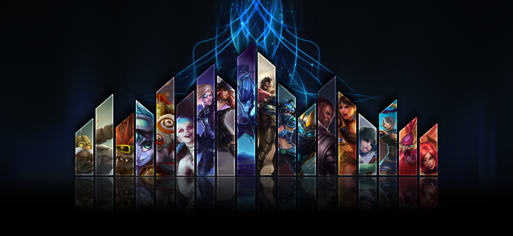

Attack Damage Carry Marksman

An AD Carry Marksman is defined by a champ that do most of their damage through auto attacks and therefore need the most items to be successful. AD Carries are normally found in the Bottom Lane of Summoner's Rift . They farm all game in order to buy damage items to become stronger. A Support will be in the lane with them, supporting them through the laning phase. Early game, the AD Carry must be "carried" by the team until they can Carry the game themselves.
A marksman is a ranged attacker that sacrifices defensive power and utility to focus on dealing strong, continuous damage to individual targets. Typically focused on using their basic attacks more than their abilities, marksmen have the capability to scale and deal out devastating levels of damage in the late phase of any game..